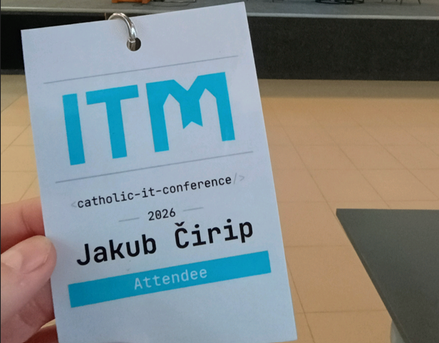
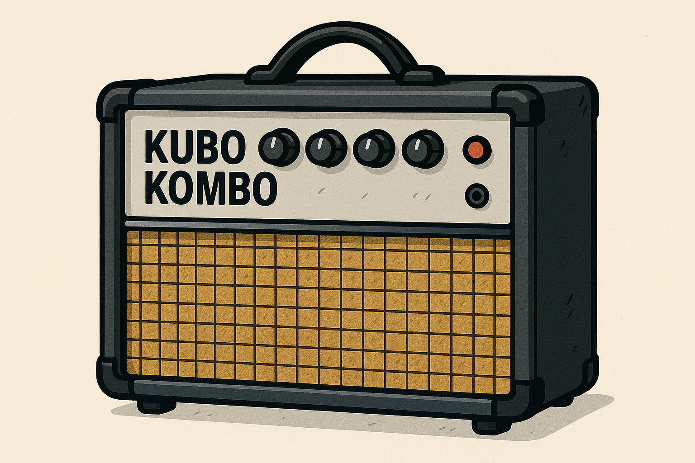

Linux Administrator | Linux Kernel | C/C++ | Bash
Hi all,
I am an Application administrator with a strong interest in low-level software development and embedded systems.
Professionally, I work with Linux and Windows servers, production environments, and application infrastructure. In my spare
time, I focus on embedded development using STM32 microcontrollers, Arduino uno, and Orange Pi, and continuously improve my skills in C
programming, debugging, and software architecture.
I hold a Bachelor's degree in Computer Networks from the Faculty of Electrical Engineering and Informatics at the Technical University of Košice (FEI TUKE), followed by a Master's degree in Mechatronics from the Faculty of Mechanical Engineering at the Technical University of Košice.
Since February 2024, I have been working as an Application Administrator at Deutsche Telekom IT Solutions Slovakia, where I manage Windows and Linux servers, provide support to customers and users, maintain production environments, troubleshoot issues, and automate tasks using Bash.
Outside of work, I develop embedded applications for STM32 microcontrollers and continue expanding my knowledge of embedded software engineering, C programming, Linux internals, Git, debugging techniques, Linux for embedded systems and modern development workflows.


Check out my Hackerrank profile for coding challenges and solutions:
I've many hobbies, but as a believer, I want to put God first in my life -> prayer, holy mass, adoration,
worship, etc.
Other hobbies are: sports (football, running, cycling, ice skating,...), music and guitar playing, tech hobbies
(check out my blogs), service with young people, pilgrimages.
Email: jakub.cirip@gmail.com
GitHub: jakubcirip
LinkedIn: linkedin.com/in/jakubcirip